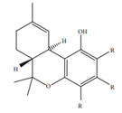

THC
Primary Cannabinoid About Tetrahydrocannabinol (THC)
Tetrahydrocannabinol, or THC, is the chemical compound in cannabis that is responsible for producing psychoactivity - the euphoric sensation commonly called “a high.” Due to this ability to affect the mind in pleasurable ways, THC is the cannabinoid most sought out by recreational users. These effects are unlocked when THC binds to the CB1 receptors in the brain and induce the release of dopamine.
There is a wide range of medical benefits brought on by THC, many of which are experienced differently by different individuals. With a boiling point of 315 degrees Fahrenheit, some people find that THC elicits tranquility and relaxation, while others experience elevated anxiety. The potency of the plant, the dose, and a user's tolerance all play a role in how THC will be metabolized and what outcomes will result from its use. Among a myriad of effects, the most common include mood enhancement and euphoria, mental stimulation, increased heart rate, altered perception of the passage of time, dizziness, laughter, dry eyes and mouth, increased hunger, laziness, the sensation of feeling spacey, increased focus, and many others.
In the digestive tract, THC has been shown to influence the release of the “hunger hormone” and otherwise function as a powerful antiemetic. Due to these effects and despite the lengthy cannabis prohibition, a synthetic form of THC has long been approved by the FDA as a treatment option for chemotheraphy and AIDS patients. Finally, THC’s ability to reduce inflamation and stimulate the release of dopamine (similar to an opioid but far safer) make it a viable treatment option for treating pain and inflammation. This includes topical applications as THC is capable of effecting the CB2 receptors in the skin.
Laboratory test results correlate to strain attributes and subsequently, to the recommendations provided by StrainRx. A strain rich in THC will have corresponding values for its ability to stimulate euphoria, increase energy, or exhibit anti-inflammatory effects, as cannabinoid content is one of the factors that is included when publishing strain information, effects, and medical benefits.
Looking for a high THC strain? Use our Cannabis Search Engine to find it near you!